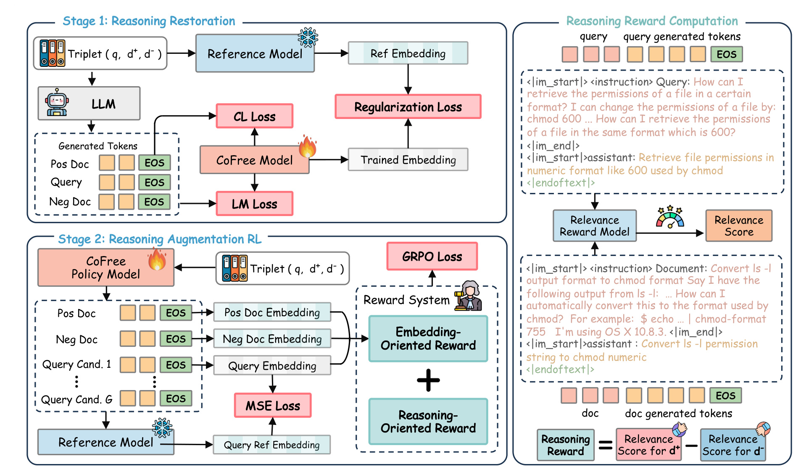
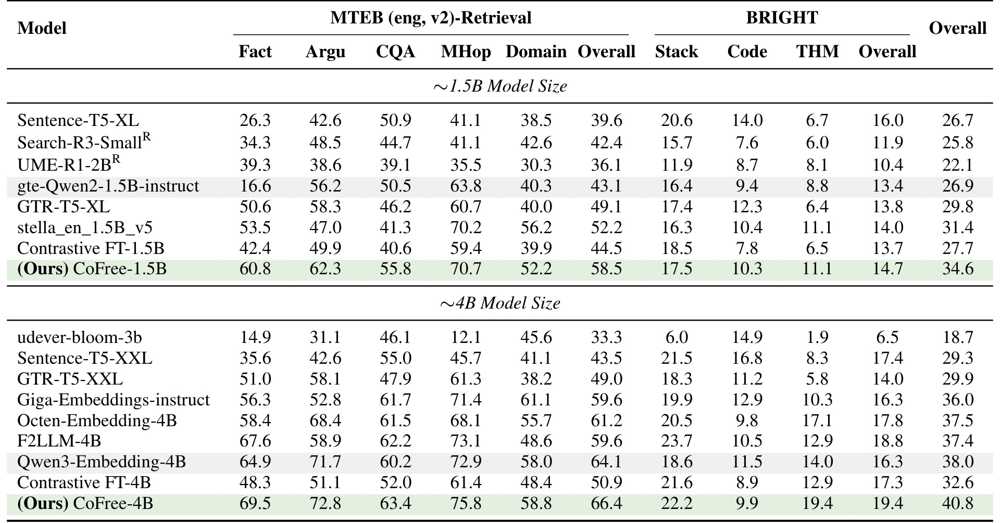
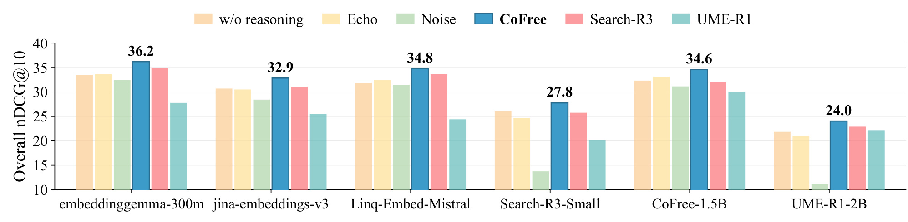
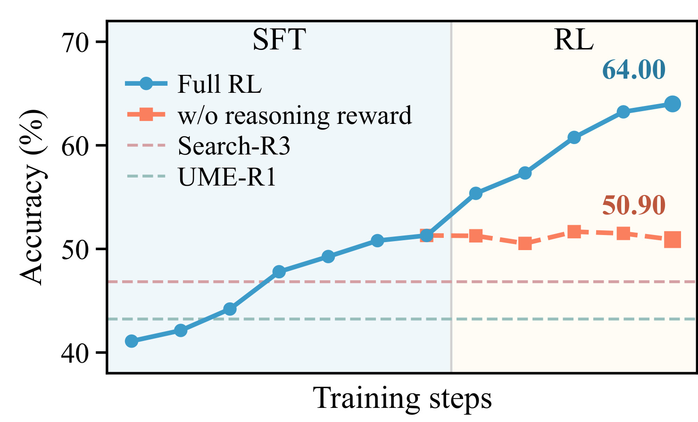
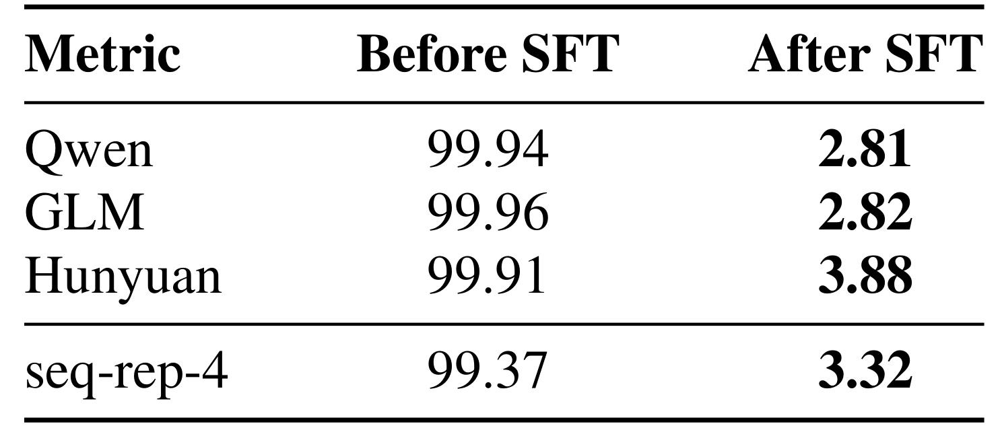
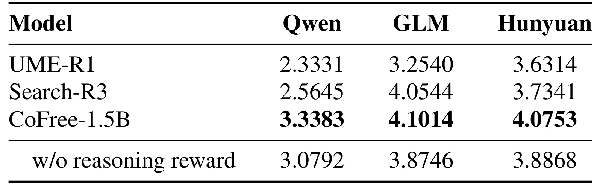
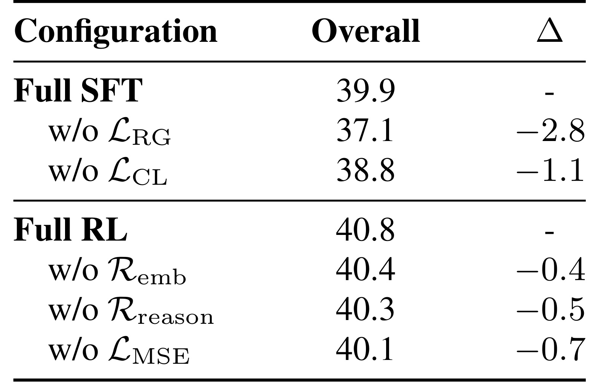
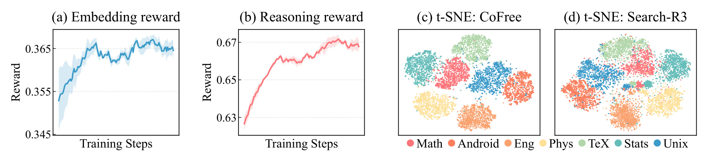
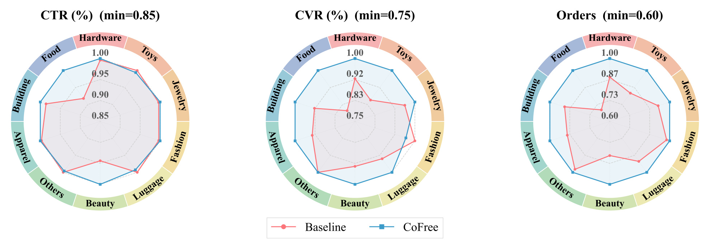

CoFree：在文本嵌入学习中恢复并维持检索相关推理
论文： Reasoning Quality Matters: Combating Reasoning Collapse in LLM-Based Embedding Learning
作者： Zihan Gong、Xiaohan Ye、Jiangchao Yao、Jinsong Lan、Xiaoyong Zhu、Xu Chen；Gong、Ye、Chen 标注共同贡献，Chen 为通讯作者。
机构： 阿里巴巴归属仅据第一作者 taobao.com 邮箱谨慎识别；首页没有完整机构映射，不能据其他作者的学校邮箱宣称一作学校已经核验。
来源与日期： arXiv v1，2026-09-17 提交，2026-09-18 公告；本笔记记录于 2026-09-21。
原文： arXiv:2609.20563
代码与数据： 作者声明将公开代码、RTED 和模型检查点，本次未核验独立仓库与权重，不能视为已经开源。
方向： 推荐算法主类别；文本检索、表示学习、大模型推理增强。
1. 背景和问题
面向嵌入目标的专门化训练可能压制有用推理的生成，也可能产生与检索无关的文本；把推理加入编码链路，并不保证推理始终忠实于检索需求。CoFree 关注一个容易被最终检索分数掩盖的冲突：同一个大模型既要把语义压缩为可比较的向量，又要生成对这些向量有帮助的文本。如果只奖励最终表示，模型可以通过改变隐藏状态满足训练集上的相似度要求，却不必保留可读、有信息量、能够区分正负文档的语言过程。因而读到“先推理再生成向量”时，需要追问生成了什么，以及这段内容能否独立帮助检索。
传统双塔检索把查询和文档各自映射到固定维度空间，用相似度把相关材料拉近。它适合大规模候选检索，因为文档可以提前建索引，查询只需一次编码和近邻搜索。但自然语言里的实体、关系方向、否定条件、属性约束往往没有一一对应的表面词汇。原文以查询意图澄清作为切入点：在编码前把省略的关系讲清楚，把含糊的短语扩展为完整的检索需求，有可能让有限维向量更容易表达细粒度相关性。这种扩展可以很短，并不要求像数学证明那样展开长思维链；本论文的“推理文本”主要指服务检索的语义解释和补全。
生成模型和嵌入模型的优化单位不同。语言建模要求每一步预测下一个词，关注条件生成的连贯性；对比学习要求一个序列最终输出的向量区分正例和负例。二者共享参数后，增加一种能力有可能挤压另一种能力。一个经过大量嵌入专门化训练的骨干，仍然可能拥有很强的检索表示，却无法在原有生成接口上正常输出文本。相反，一个会写流畅解释的模型也可能把相关和无关文档都描述得很合理，没有真正改善检索边界。因此模型能否流畅说话、表示是否有判别力、生成内容是否提供额外检索信息，需要分别观察。
作者把失败分成两类。生成坍塌是可直接观察的输出故障，例如空文本、持续机械重复和不可读内容；语义坍塌则发生在语言仍然流畅时，表现为泛泛扩写、错误关联或缺乏正负判别信息。引言举的例子是把珊瑚礁概念和名称含相同词语的赌场实体混淆：表面词形相似可以触发貌似相关的联想，但它会把查询带向另一类对象。后者更难通过通用语言质量打分发现，因为一段句法正确的解释完全可能偏离检索意图。这里的“坍塌”是任务相关的退化描述，而不是证明模型内部所有推理能力已经消失。
这一分类对应两个研究问题。首先，怎样让嵌入骨干重新生成有用文本，同时保留原来的表示能力？仅靠语言模型监督可能恢复生成，却破坏已经学好的向量空间；仅靠对比目标又可能继续压制生成。其次，生成恢复以后，怎样使它对正负文档的区别有贡献，而非只追求连贯？若奖励只根据最终向量计算，语言可能沦为一个任意的中间编码接口。CoFree 的回答是分阶段建立约束：先用参考骨干保护表示，再给推理文本本身加入面向相关性的监督。两个阶段各自解决不同障碍，不能把全部提升都归功于强化学习。
论文与常见查询改写也有区别。这里不是额外挂一个固定改写服务，再对现成向量模型做一次输入增强；生成和编码共享可训练模型，结束标记位置的隐藏状态直接作为表示。查询和文档两侧都可以携带推理文本，因此训练不仅要关心查询措辞，也要控制文档解释是否改变事实。教师数据提示词要求保存专名、数值、单位、否定和不确定性，不得把用户体验中的“可能有效”改成确定承诺。这些限制对电商属性匹配尤其相关，因为兼容性、型号、尺寸等一旦被扩写错，即使更容易匹配，也可能召回错误商品。
从推荐和搜索工程角度看，本文最直接的落点是文本召回与语义匹配。它并未研究个体用户的序列偏好，也没有给出排序系统端到端训练或广告竞价的完整方案。搜索查询通常明确包含任务意图，推荐场景则需要先定义哪些用户行为可以被转化为检索意图；把点击历史解释成确定偏好，可能引入比原始日志更强的偏差。因此在迁移时，应该先验证查询、商品描述和难负例之间的语义关系，再讨论是否接入个性化召回。文中线上系统把 CoFree 作为额外召回通道，这也意味着离线表示优势和整个推荐栈的经营收益之间还存在候选融合、去重和排序环节。
阅读证据还要分层。检索基准回答最终排名是否改善；生成退化统计回答输出能否正常读；独立重排器回答增强文本是否更能区分正负；大模型评委回答内容是否看起来保持意图并提供具体信息；固定编码器实验则尽量分离推理内容与模型参数变化的贡献。这些评价互相补充，任何单项都不足以证明所谓“推理质量完全恢复”。尤其是模型评委没有外部事实核验工具，它们给出的高分不等于生成内容每个细节都正确，也不证明可见文字忠实反映模型内部计算。
还有一个基础口径值得明确：检索相关性不是文本之间的普通语义相似。查询要求解决某个具体问题，正例必须满足该需求，负例却可能在主题和用词上非常接近。若解释只放大共同主题，两边相似度可能同时升高，排名反而没有改善。因此本文以正负差值作为奖励，实际上把“说清楚主题”进一步收紧为“保留能区分目标和干扰项的约束”。这也解释了难负例构造为何贯穿数据准备和强化学习，不能仅凭随机不相关文本检验方法。
2. 方法
2.1 推理恢复学习：生成、对比和参考约束联合训练
第一阶段从已经训练好的嵌入骨干开始。输入是指令与查询或文档文本，监督目标是教师构造的语义解释，模型生成到结束标记后，取该位置的最终隐藏状态作为嵌入。教师目标提供“应该怎样说”的监督，对比目标提供“应该怎样匹配”的监督，冻结参考骨干提供“不要丢失什么”的约束。这里保留三种目标并不是简单堆叠损失，而是把生成质量、相关性判别和已有表示能力分别交给不同信号处理。

Figure 1 左上部分展示推理恢复阶段，三元组中的查询、正例和负例都有原始文本与对应推理。教师生成的内容进入可训练模型，语言建模监督作用于输出词，嵌入对比损失作用于结束标记的向量，参考分支则冻结参数并编码原始输入。这一分工解释了为何不能简单把三个损失理解成同一标签的三种写法：它们对共享参数施加的几何约束和粒度不同。参考损失把增强后的向量拉回原始骨干的可信区域，给恢复语言能力留出空间，但也防止改写训练把表示变成另一个不兼容的检索系统。
左下部分展示第二阶段的采样和奖励：同一查询产生多个候选推理，文档侧也生成解释，奖励同时看最终向量的正负相似度差和独立相关性模型给出的文本判别差。右侧文件权限例子把自然语言提问压缩为检索所需的语义，例如需要数值形式的权限，而不是泛泛谈文件操作。图中的参考模型在两阶段并非同一快照：第一阶段参考初始嵌入骨干，第二阶段参考完成监督训练后的模型。辨认这一变化很重要，否则会误以为强化学习仍被直接约束回未经恢复的生成分布。图里的奖励模型只在训练中提供评价；正式编码不需要对每个候选文档在线运行这个交叉编码器，但生成推理本身仍然会增加服务成本。上下两块共享“保留表示”的思想，却分别约束不同阶段的漂移风险。语言建模损失对应原文公式 1：
符号解释： 其中 $N$ 是样本数，$x_i$ 是包含指令的输入，$y_i$ 是教师推理目标，$T_i$ 是目标长度，$\theta$ 是模型参数。这一项恢复逐词生成能力；公式按样本平均后对词求和，不能随意改写成每词平均而假定权重完全等价。原文公式 2 用余弦相似度定义增强输入之间的匹配：
符号解释： 这里 $r_a,r_b$ 分别是两侧推理，$\oplus$ 表示拼接，$\operatorname{Emb}$ 取结束标记表示。查询和文档的解释会共同改变相似度，不是只修改查询向量。随后使用原文公式 3 的对比损失：
符号解释： $q_i$ 是查询，$d_i^+$ 是正例，$d_{i,m}^-$ 包括难负例和批内其他文档，$q_j$ 是其他批内查询，$\tau$ 为温度。分母额外放入查询负例，使模型不能只学到“查询总比文档更相近”的角色捷径。负例数量与批次组成都会改变难度，因此数据集分组和长度分桶不只是吞吐优化，也关系到批内负例的语义分布。参考引导来自冻结的初始骨干，原文公式 4 为：
符号解释： $K$ 是每个查询的难负例数；$K+2$ 个文本由一个查询、一个正例和 $K$ 个负例构成。参考向量只看原始输入，可训练向量看原文加推理，因此正则鼓励扩展文本在保留原语义附近改进表示，而不是自由漂移。总目标对应公式 5：
符号解释： $\mu$ 和 $\gamma$ 分别控制对比项和参考项的强度；主配置为 $\mu=1,\gamma=40$。系数不能脱离损失本身的数值尺度比较，较大的参考系数不等于其梯度在所有步骤必然支配其他目标。第一阶段的要点是在恢复生成时直接保护向量能力，而不是先生成训练、再希望原来嵌入能力自然保留。
2.2 推理增强强化学习：双奖励与嵌入空间正则
监督恢复后，模型已经能生成合理文本，但教师模仿不保证内容对当前检索最有用。第二阶段给每个查询采样一组推理候选，文档侧生成推理并参与奖励计算，但不经文档侧生成和编码路径反向传播。所有奖励嵌入由当前策略模型计算；样本中原来的文档也可作为查询侧输入，因此“文档端停止梯度”不是说文档永远不获得训练，而是指当前优化步骤中的计算路径。原文公式 6 定义最终向量的判别奖励：
符号解释： $i$ 表示第 $i$ 个查询推理候选，$\phi_i$ 使用该候选计算查询向量；$d^+,d^-$ 是正负文档。奖励比较两者差值，可以鼓励排名分离，但并不直接要求可见推理信息充分。为此公式 7 再引入独立相关性模型：
符号解释： $s$ 来自 Qwen3-Reranker-4B。只把所有内容都说得“很相关”的通用扩写，如果同等提高正负得分，就不能提高这个差值。它约束的是生成路径携带的相关性信息，和向量端点奖励形成互补。不过差值奖励只防止这一特定形式的投机，不代表消除了所有奖励漏洞；模型仍可能学习重排器的偏好或错误边界。强化学习中的冻结参考模型改为监督训练完成的快照。原文公式 8 对相同增强查询做向量匹配：
符号解释： $G$ 是每组候选数，主配置为 8；$\theta_{\rm ref}$ 为固定的监督训练参数。这里参考分支同样看到增强输入，与第一阶段参考原始文本不同。语言分布的 KL 约束限制生成概率漂移，向量 MSE 则直接限制嵌入漂移，两者作用空间并不相同。原文公式 9 将其组合为：
符号解释： $\lambda$ 控制嵌入奖励权重，$\eta$ 控制向量正则，主设置分别为 1 和 10。GRPO 用组内奖励减去均值、除以标准差加稳定项得到相对优势，不需要单独的价值网络。附录 A 第 15 页明确，本配置每个采样批次只更新一次且不复用，更新开始时重要性比率为一，所以裁剪不激活；实际目标是按有效响应 token 总数归一化的策略梯度，加生成分布 KL 与嵌入 MSE 约束。不能把收益归因于这里未激活的裁剪机制。推理时默认采用贪心解码生成扩展再编码，不再采样整组候选或访问正负标签。因此训练中的组内筛选与部署中的单次生成必须区别对待；附录使用真实标签选择最佳候选的实验只能衡量潜在上界。
2.3 RTED 数据构造：先清洗相关性，再生成并筛选解释
数据流程放在原文附录 D，决定上述损失看到什么内容。原始约 700 万条样本来自 bge-en-icl 及问答、代码、论证等训练集，最终约 360 万条组成 RTED。先用 0.6B 重排器剔除正例得分低于 0.4 的样本；缺少负例时用 0.6B 嵌入模型检索同一子数据集，排除已知正例，从第 10—30 名随机选 10 个候选，再由 8B 重排器评分。只有负例得分不超过正例得分的 0.95 倍才有资格进入集合，最后取分数最高的两个；不足两个则丢弃。这种设计兼顾难度与降低假负例，但模型评分阈值不能保证标签绝对正确。
教师为 Qwen3-235B-A22B 的非思考模式，查询和每个文档各自独立生成解释，只看自身内容，不让查询直接偷看正例答案。查询侧补全意图、纠正一般拼写、添加相关上下文与同义词，文档侧显式化事实关系并去噪；专名、标识符、数值及限定语必须保留。随后冻结 Qwen3-Embedding-4B，分别计算原始正例对与增强后正例对的余弦相似度，只有增强值不低于原值的 0.9 倍才保留。筛选依赖现有编码器的相似度判断，所以数据质量和骨干偏好仍然耦合；它提供弱检索约束，却不能代替逐条事实核验。
监督阶段消费教师文本，强化学习阶段消费同一批查询文档元组并重新采样当前策略推理。二者共享数据来源却没有把教师目标直接当强化学习轨迹。主训练使用 32 张 NVIDIA GPU，SFT 按数据集和完整序列长度分桶，超过 3072 token 的样本丢弃。分组有助于减小填充浪费，同时让批内负例更集中；长文本截断与丢弃则可能改变训练领域组成。理解这条数据链路，才能解释为何“同样增加数据”和“同时保护表示、修复生成、奖励判别”需要分别做对照。
3. 实验结果
3.1 检索基准与总体结果
评测包括 MTEB English v2 的 10 个检索数据集和 BRIGHT 的 12 个子任务，指标为 nDCG@10。论文在同一评测协议下本地重评各模型，保留各自默认编码设置和检索指令，增强后输入最多 4096 token。Overall 是 22 个数据集的等权平均，不是两个基准均值再平均，也不是按查询样本数量加权。模型按约 1.5B 和约 4B 分组，前者初始化为 gte-Qwen2-1.5B-instruct，后者初始化为 Qwen3-Embedding-4B。

Table 1 最右列给出的 CoFree-4B 是 40.8，Qwen3-Embedding-4B 是 38.0，差值为 2.8 个 nDCG@10 分数点。MTEB 分别是 66.4 和 64.1，BRIGHT 分别是 19.4 和 16.3；前者提高 2.3，后者提高 3.1。因为两个基准包含的数据集数量不同，总体结果应按十个与十二个任务的权重解释。把两个已四舍五入的均值直接取二分之一，会得到不同数字；更严谨的复现应使用未舍入的逐数据集结果重新聚合。表中颜色标出初始化骨干和新模型，是沿同一骨干评估变化的便利入口，却不代表所有外部基线拥有同样训练数据和预算。
1.5B 版本 Overall 为 34.6，高于同组 stella 的 31.4，也高于 Search-R3-Small 的 25.8 与 UME-R1-2B 的 22.1。与只做对比学习的同数据对照相比，CoFree 在两个规模分别为 34.6 对 27.7、40.8 对 32.6，支持训练设计的贡献不只是多收集了一批文本配对。但“同数据”对照仍然不是每项计算完全等量，教师文本和强化学习的生成成本需要单独考虑。值得保留的负向结果是 4B 在 BRIGHT-Code 上只有 9.9，低于骨干的 11.5；在 LeetCode 上从 21.2 降至 18.7，Pony 从 1.9 降至 1.1。1.5B 的代码组平均则从 9.4 升到 10.3，但 Pony 同样下降。不同骨干与子任务表现并不一致，因此整体领先不能改写为逐领域全面提升。
作者提出混合领域继续训练可能改变骨干的代码能力，且代码相关监督覆盖不足可能造成影响。CodeSearchNet 仅保留 186058 条、保留率 13.54%，与 CoSQA 合计约占保留元组 5.5%。从检索指标本身看，nDCG@10 强调前十条排序位置和标注相关性，并不直接测量库中所有相关条目的召回覆盖。某通道改善前十条与扩大有效候选集合是不同能力，后者还需要额外的召回率和候选互补实验。尤其在多路召回中，不能把这张离线排名表当作通道融合后收益的直接计算输入。这是与失败现象相容的解释，还不是受控因果验证；没有“加回代码数据即可恢复”的实验，不能把候选原因写成确定结论。
3.2 推理的可迁移检索价值
只比较训练后模型与原骨干，无法区分收益来自新表示空间还是新增文本。固定编码器实验把参数保持不变，仅替换输入：原文本、不含新信息的复述 Echo、与推理长度匹配的随机词 Noise，以及不同模型生成的推理。每种推理生成一次后在六个编码器间复用，查询和文档侧都应用相应增强方式。

Figure 2 横轴是六个冻结编码器，纵轴为同一组二十二个数据集的总体检索分数，颜色代表原始输入、两种对照和不同推理来源。CoFree 推理在所有六个编码器上都超过无推理输入，总体提高约 1.75—2.94 分，并高于 Echo 与 Noise。这个设计比单纯看新模型的总分更有说服力：编码器没有继续训练，新增文本被其他模型编码后仍带来收益，说明至少一部分信息可以通过可见文本传递，而不只是藏在共同训练的参数里。例如 embeddinggemma 的原始输入为 33.50，CoFree 文本为 36.20；Linq 从 31.84 到 34.78。表 7 提供的更精确数字与图上的一位小数标注应区别读取。
Echo 的意义是排除重复原文形成某种提示或长度效应，Noise 则把增加长度与增加语义信息拆开。随机词对有些编码器损害很大，尤其在推理型模型上，因此不能只挑最弱的 Noise 作为基线来夸大提升，应主要对比原始输入，再看 Echo 是否已经获得大部分收益。UME-R1 生成的文本在五个冻结编码器上低于原始输入，在自身编码器上只有小幅增加，显示“由推理模型生成”本身不是安全增强的充分条件。不过输入不匹配和截断也会影响结果：增强文本可能挤掉原文有效部分，模型的默认格式和池化方式也各不相同。论文明确指出，仅凭某编码器上的检索下降不能断言发生语义坍塌，还需要独立的内容和判别评价。
这些结果对模块化系统有启发：可以先离线为文本库生成扩展，保持现有索引编码器不变，测量收益是否迁移，再决定是否训练联合模型。但该实验未报告所有生产索引构建、存储刷新和尾延迟成本，不能直接推出“更换输入就能低成本上线”。扩展后的文本还可能触发语料更新，查询端和文档端分开升级时也应检查匹配一致性。
3.3 生成完整性与语义质量
作者使用三类诊断，分别观察可读性、正负判别和内容评价。独立重排器实验采用相同查询及相关文档，另由 Qwen3-27B 生成难负例；这些诊断负例不替代正式基准语料和相关性标签。三个评测重排器与训练奖励使用的 Qwen3-Reranker-4B 不同，降低了直接拿训练裁判验收自己的循环。

Figure 3 的纵轴是三个重排器在正负文档之间选择正确次序的平均准确率，不能与 nDCG@10 直接相减比较。监督训练末尾 CoFree-1.5B 达到 51.30%，完整强化学习末尾达到 64.00%；去掉推理奖励的分支终点为 50.90%，基本没有高于监督终点。两条分支从同一监督检查点开始，使曲线差别更容易归因到奖励设计，而非初始化差异。附录表 11 显示完整分支在每个被测强化学习检查点和所有三个重排器上均优于去掉推理奖励的分支，这比只挑终点展示提供更多训练过程证据。
与此同时，准确率提升只能说明这些评估器在该诊断集上更容易区分相关和构造的难负例。由于负例由模型生成，分布未必等同真实检索库中最难的混淆文档；结果不保证所有实体消歧、否定判断或隐含约束都被解决。图中 Search-R3 和 UME-R1 的水平虚线分别是 46.83% 与 43.23%，并不是它们经过相同训练步数的曲线。横轴只提供训练阶段与进展，不能把相同图上点间距离当作相同 GPU 成本。独立裁判也并非完全独立于预训练生态，仍可能共享语料或偏好，因此其价值在于提供交叉检验证据，而非排除一切奖励偏差。
从机制上看，这幅图尤其支持语义奖励的必要性。若只要求最终向量分开，策略可能找到不会改善人可读内容的办法；加入文本相关性差值后，生成的解释更能帮助外部重排器做选择。这里没有直接观测模型内部推理过程，合理结论是“检索相关文本质量提高”，而不是证明内部思考变得更真实或更符合某种认知机制。后者需要不同实验。

Table 2 使用 4B 模型，比较监督训练开始和结束时的生成完整性。三个评委给出的退化比例从 99.94%、99.96%、99.91% 分别下降到 2.81%、2.82%、3.88%；重复四元组比例从 99.37% 降到 3.32%。这说明初始嵌入模型直接走生成接口时出现非常严重的重复等故障，而经过恢复训练后大幅缓解。它不意味着未经恢复的骨干检索性能接近零，事实上该骨干在正式检索表中相当强。生成接口失效和向量表示有效可以同时存在，这正是第一阶段参考保护具有意义的原因。
三个评委的退化标签只针对持续机械重复、乱码或空内容，不审查事实、相关性和一般写作风格。正常术语复用、公式、代码、短输出、轻微语法问题都不应判为退化。重复指标则从序列内重复的四元组比例量化，与“多少条输出被判失败”具有不同分母。两类数字一起下降，加强了恢复生成能力的判断，却不能用于说明模型的知识正确率提高了相同幅度。附录协议使用统一分词器、贪心解码和最多 2048 个新 token，长度上限也可能影响循环重复统计，所以复现时必须保留这组诊断设置，不能直接与主检索的生成长度混用。
这一结果仍留下一个工程问题：剩余几个百分点的生成故障在长尾线上请求中是否集中于特定语言、超长文本或格式？论文没有给出完整分桶。若把这类模型接入召回，应该保留原文回退策略，例如生成异常时使用原始输入编码，并记录触发比例；这是从故障类型推导的工程建议，不是本文已验证的线上实现。比起用平均退化率宣布问题已经消失，确认异常是否可检测、可回退更接近服务要求。

Table 3 评价的是 1.5B 模型的查询推理内容，三列分别来自 Qwen3.5、GLM 和 Hunyuan，评分范围是一到五。完整 CoFree 的均分为 3.3383、4.1014、4.0753，去掉推理奖励后为 3.0792、3.8746、3.8868，对应差值 0.2591、0.2268、0.1885。所有评委都给完整版本更高的均分，但不同评委的绝对尺度明显不同。例如同一模型的 Qwen 分数与 Hunyuan 分数不能被当作同一尺子下的难度变化。表中的四位小数来自聚合精度，不意味着单条评分的分辨率如此细，也不能单凭小数位数判断统计显著性。
评委只看到查询及其推理，不看到正例和负例，因此关注的是意图和约束是否保存、扩展是否合理、是否增加具体有用的信息，而不是直接判断能检索到哪篇文档。提示词要求避免因为长度、文风或步骤数而奖励文本；简短而具体的澄清可以得到高分。这与模型平均只生成几十个 token 的观察一致，也提醒我们不要把“更长的链”当成更强推理的代名词。作者同时声明评委没有外部核验工具，它们只能判断给定内容的可信程度，无法独立验证其中每个事实，更无法确认文本是否忠实对应内部计算。
因此表 3 与 Figure 3 的作用不同：前者提供语言内容层面的判断，后者提供正负判别的实用代理，而 Figure 2 再验证冻结编码器上的真实检索变化。三者方向一致时，语义退化缓解的主张比任何单个指标更可信。仍需要注意，生成完整性在 4B 测，内容评价和重排轨迹主要在 1.5B 测；不能把所有数字拼成同一模型从头到尾的单条因果链。不同规模的互补实验支持框架，但尚不能代替每个模型上的完整诊断矩阵。
3.4 消融与训练动态
组件消融在 4B 规模进行，监督阶段始终保留语言建模项，强化学习所有分支来自相同完整监督检查点，并保留生成层 KL 约束。这样可区分嵌入空间正则和语言分布约束的作用。

Table 4 最直接的信息是监督训练已经达到 39.9，强化学习进一步达到 40.8，新增约 0.9 分。若只看摘要的总体增量，容易把所有收益都归因于强化学习，消融说明恢复训练和表示保护已经承担主要改进。监督阶段去掉参考引导后为 37.1，下降 2.8；去掉对比项后为 38.8，下降 1.1。这支持参考约束对保留骨干能力的重要性，但各损失相互作用，不能把两项下降相加当作独立贡献，也不能说参考项单独就能带来同样增益。所有监督消融都保留语言建模，表中没有单独删除该项的可比结果。
强化学习阶段去掉嵌入奖励后得分 40.4，去掉推理奖励后为 40.3，去掉嵌入 MSE 后为 40.1，相对完整配置下降 0.4、0.5 和 0.7。最大单项降幅来自表示空间正则，说明即便保留 KL，对向量能力的直接约束仍然有价值。推理奖励在最终检索分数上的差值看起来不大，但独立重排器准确率的差距明显，二者说明它对文本路径的影响比单个总体检索均值呈现得更突出。不能据此宣称语义奖励“只改善可解释性而无性能作用”，因为表中检索也下降；也不能反过来将重排器的十多个百分点差距当作检索分数差。
附录敏感性使用缩减训练配置，仅在部分数据上运行，分数以零到一刻度呈现。对比权重过高会伤害联合优化，增强参考引导在测试范围内有益；强化学习的嵌入奖励权重在所测区间影响较小，过强向量约束则限制适应。这些趋势给调参提供方向，但不能把附录曲线的数值与完整训练主表直接拼接。复现时应先匹配主设置及损失归一化，再做局部敏感性，而不是照搬一个看起来大的系数并假定跨骨干通用。

Figure 4 左边两幅曲线分别跟踪嵌入奖励和推理奖励，曲线整体上升，与双目标被实际优化相符。阴影来自三个随机种子的均值和标准误，轨迹做过权重为 0.95 的指数平滑。因此它能支持训练过程中奖励增长的描述，却不能单独证明测试检索泛化；奖励本来就是优化对象，仍可能受到奖励模型偏差或对训练负例过拟合。最有意义的解读方式是把它与独立裁判和检索结果放在一起，而非把曲线平稳当作没有语义退化的充分证据。
右侧两个面板分别显示 CoFree 与 Search-R3 在七个问答子领域上的 t-SNE 投影。每个子领域采样一千个样本，颜色表示领域，CoFree 在该展示中形成较清楚的领域团簇。但两幅投影分别拟合，坐标、尺度和跨模型点距不能直接比较；“左图某团更远”并不等于原始高维空间的相关性边界一定更好。领域分离也不等于域内细粒度检索改善，同领域的难负例可能恰好需要更精细的区分，而不是更清楚地知道它属于数学或安卓。论文把它作为定性结构观察更合适，定量优劣应回到主检索任务。
附录还给出最佳候选上界：从六十四次独立采样检索中，对每个查询利用真实相关性标注挑选最高 nDCG@10，再对不同候选数作蒙特卡洛选择。所有规模和四个数据集均显示潜在空间，但这里存在部署时不可获得的真值选择器。候选数增加后曲线上升，只能说明不同推理轨迹的质量存在差异，尚未提供能低成本挑出最佳轨迹的算法。主结果采用贪心解码，而上界单次点采用温度采样，两者起点也不同。若未来研究把这条路线用于服务，应报告无标签选择器、文档索引变化与多次生成开销。
3.5 效率与线上验证
端到端吞吐包含推理生成和嵌入提取。论文报告 CoFree-1.5B 相对 Search-R3-Small 为 4.4—5.4 倍，相对 UME-R1-2B 为 7.3—12.1 倍，MTEB 和 BRIGHT 上平均生成 39.4 与 65.8 个 token。相同 NVIDIA 硬件和相同推理框架让这些比值较有参考价值，但它们是与其他推理式模型比较，不能宣称比直接编码的 Qwen 嵌入骨干更快。平均 token 数也不是线上最坏情况延迟。4B 训练的监督和强化学习阶段分别约二十四与四十八小时，硬件规模三十二张卡；训练成本、离线文档生成和在线查询生成应分别核算。
线上实验重新使用工业数据训练，将模型作为电商搜索中的额外召回通道，与已有 Qwen3 相关嵌入方法共存。正文报告 CTR 绝对增加 0.02 个百分点，CVR 绝对增加 0.12 个百分点；订单量相对增加 13.56%，GMV 相对增加 8.15%。绝对百分点和相对百分比不可混写。论文称自 2026 年 1 月已经全量部署，不能把九月论文发布日期写成刚刚上线的时间。

Figure 6 展示十个品类的 CTR、CVR 与订单量，每个雷达图都做了按品类归一化，内圈刻度分别从不同最小比率开始。因此图上的一点零不是实际点击率或转化率百分之百，图中面积也不能直接解释成业务收益大小；三幅图的面积之间更加不能横向比较。读图可见不同品类的增益并不均匀，例如部分美妆、食品、服饰相关品类在转化或订单的形状上有较明显差异，而 Fashion 的 CVR 蓝线低于红线，一些 CTR 维度也并非严格正向。虽然作者强调跨品类一致改善，更严谨的表述是总体指标正向、品类和指标之间存在异质性，不能据雷达图宣称每个品类每个指标都提高。
这个结果的工程意义在于额外召回能带来与已有通道不同的候选集合，最终收益可能来自候选互补，而不只是每个查询的单模型相关性提高。通道融合、候选预算、去重方式和排序器如何消费新增文档都会影响最终订单与成交额。在线 CTR 和 CVR 的绝对变化较小，而订单和成交额相对变化较大，并非天然矛盾，但没有分母、曝光量和流量分配信息，就不应尝试从这些数字反推具体业务基线或成交额规模。论文没有给出足以复核的实验持续时间、分流规模和置信区间，因此只能记录作者报告的线上效果，不能自行添加显著性或稳定性结论。
若准备迁移到另一条召回链路，最值得复现的并非直接追求同样的订单增幅，而是比较新增候选的覆盖、相关性、与现有通道的重叠，以及后续排序阶段是否保留这些候选。还应按品类、查询长度、实体约束和低频商品分桶，防止总体均值掩盖特定需求受损。对生成过程加入异常检测与原文编码回退，记录每一段成本，才能把离线推理文本质量和线上稳定服务联系起来。上述是根据论文暴露的信息缺口提出的验证步骤，不是该线上系统已公开的实现细节。
4. 总结
CoFree 提供了一条可操作的研究路线：把生成恢复和检索相关性优化分开，在两个阶段都直接保护嵌入表示，再用独立评价检查可见推理是否提供额外信息。最强的组合证据来自三个方向：同数据对比训练基线之外仍有收益，冻结编码器能消费新生成文本并改善检索，去掉推理奖励会损害外部重排器的判别。单看最终总体分数，容易忽略恢复阶段已经达到 39.9，以及强化学习主要再增加 0.9 的事实；单看生成退化下降，又容易忽略流畅不等于相关。本文的价值在于把这些问题拆开测量。
对召回系统而言，参考引导值得优先复现：已有强骨干包含大量难以靠当前小领域数据重新学习的能力，继续训练时给它保留锚点，往往比单纯增加更难的损失更稳妥。对大模型应用而言，双奖励强调中间文本的可用性不能只由最终端点代理。RAG 的查询扩展、工具参数解释和文档摘要都可以借鉴正负判别思路，但需要各自定义真实的失败对象；不能仅把通用语言评分器接上就假定获得相同保证。
必须保留四个限制。第一，代码任务出现负向迁移，且两种规模并不一致，混合域过滤后的覆盖可能影响专门能力，具体因果尚未验证。第二，教师生成、筛选编码器和奖励重排器共同定义“有用”，可能共享模型偏好，独立评委只能缓解而不能消除偏差。第三，主基准是英语文本检索，尚不能据此保证多语言、超长商品描述或强个性化推荐中的收益。第四，线上数据缺少流量、置信区间和服务尾延迟，额外通道收益也不能外推为全量替换现有召回后的收益。此外，代码、数据和权重仍是将公开状态，可复现性依赖后续发布。
后续可以按三个具体步骤推进。先复现同骨干同数据的监督阶段，对比有无参考约束，记录向量检索与生成退化两套指标，并单独监控代码和实体精确匹配。随后固定编码器，把原文、复述、长度匹配噪声和生成扩展放入统一输入协议，验证收益是否来自可迁移内容，并检查截断造成的损失。最后再尝试强化学习，在正负例构造、独立重排器和无外部核验的内容评价之间建立交叉检查，加入真实服务成本后决定是否需要双奖励的额外训练复杂度。
若目标是生产试验，应从有限的额外召回通道开始，明确新增候选预算和融合策略，逐项报告点击、转化、订单、成交额的分母与变化口径，同时监控存在负向迹象的品类。论文已经展示一种可能有效的训练方式，但尚未给出跨所有业务成立的最优配置。应把未来代码发布、RTED 过滤明细、代码能力恢复实验和线上成本报告作为主要跟进对象。此外，文本生成的数据治理不能省略：商品描述中的型号、库存状态和保修限定会随时间改变，旧解释与新原文不一致时，需要同步刷新或废弃缓存。扩写应保留信息来源，便于追溯哪些判断来自原始字段、哪些来自模型补全。论文的公开实验没有完整覆盖这种动态语料维护问题，部署前应作为单独验收项。这样既能保留推理增强的潜在价值，也能避免把“文本更像解释”误当成“检索一定更可靠”。